FinanZ
FinanZIngresos y gastos
Registra movimientos por categoría (predeterminadas o propias) y filtra el historial por texto, tipo, categoría y fechas.
RF02 – RF05FinanZ es una plataforma web que une la gestión y la educación financiera: registra ingresos y gastos, controla tu presupuesto, ahorra con metas, detecta gastos hormiga y aprende con lecciones y cuestionarios.
Cuenta de demostración: juan@correo.com · Finanz2026
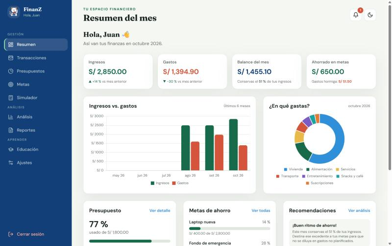
Los 20 requerimientos funcionales del proyecto, implementados en Java (Servlets + JSP) y MySQL.
Registra movimientos por categoría (predeterminadas o propias) y filtra el historial por texto, tipo, categoría y fechas.
RF02 – RF05Define un presupuesto mensual y límites por categoría. FinanZ te avisa al llegar al 80 % y al superarlo.
RF06 – RF09Crea metas con monto y fecha, registra aportes y mira tu progreso y cuánto debes ahorrar al mes.
RF10 – RF12Detección automática de gastos pequeños y frecuentes, clasificación manual y proyección de su impacto anual.
RF13Gráficos de hábitos de gasto, evolución mensual y comparación de ingresos, gastos y ahorro entre dos meses.
RF14 – RF15Descarga el resumen financiero del mes con indicadores, categorías, metas, recomendaciones y movimientos.
RF16Consejos personalizados según tus datos: ritmo de ahorro, presupuesto, metas retrasadas y más.
RF17Lecciones cortas y cuestionarios con corrección y nota de 0 a 20.
RF18 – RF19Calcula cuándo alcanzarás tu objetivo o cuánto debes aportar por semana, quincena o mes.
RF20Capturas del sistema funcionando con los datos de demostración.
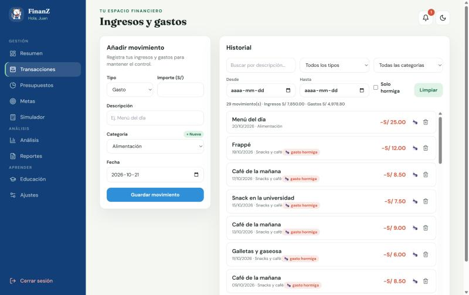
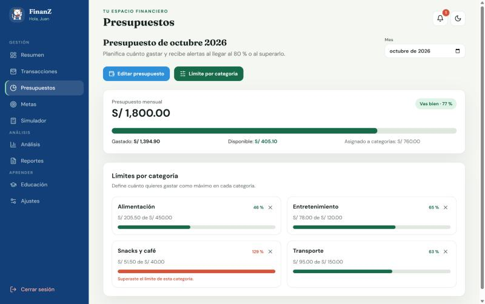
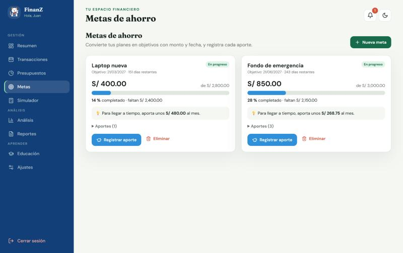
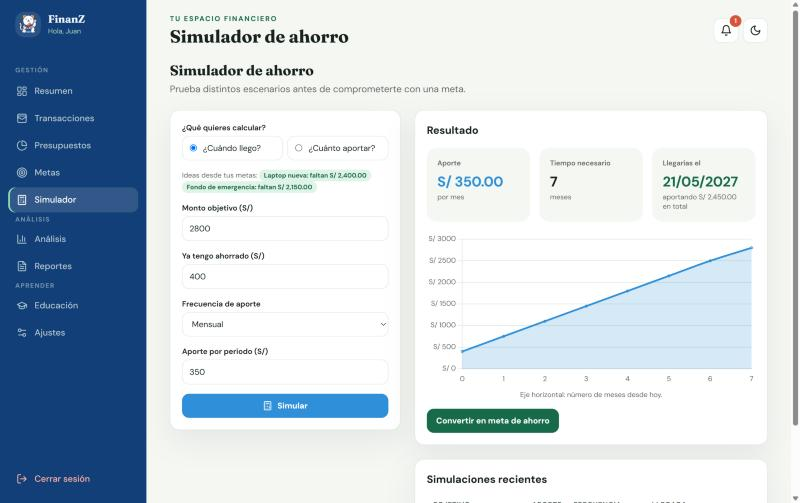
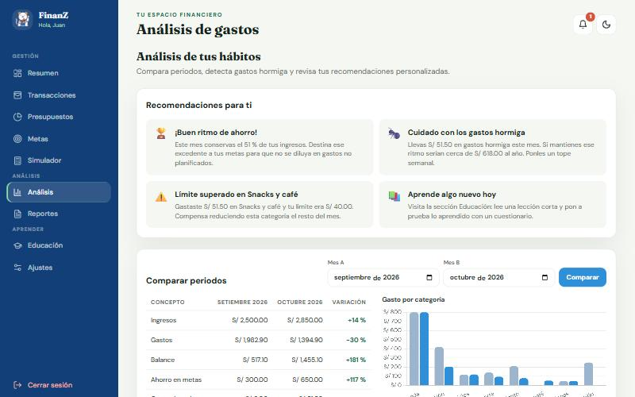
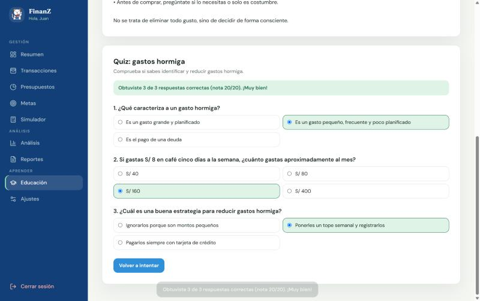
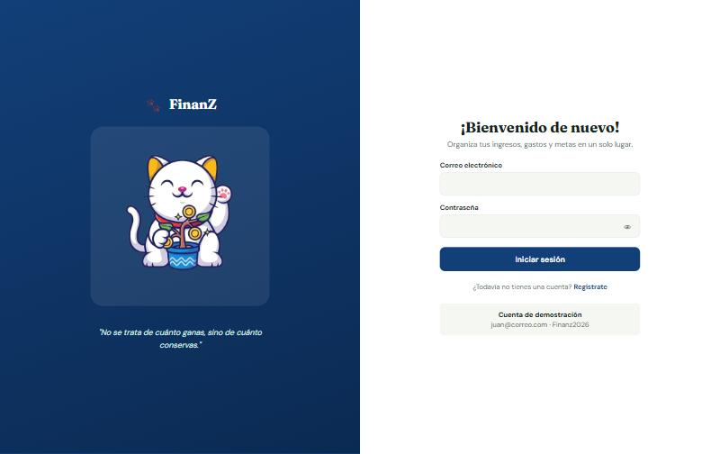
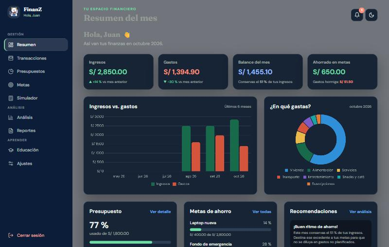
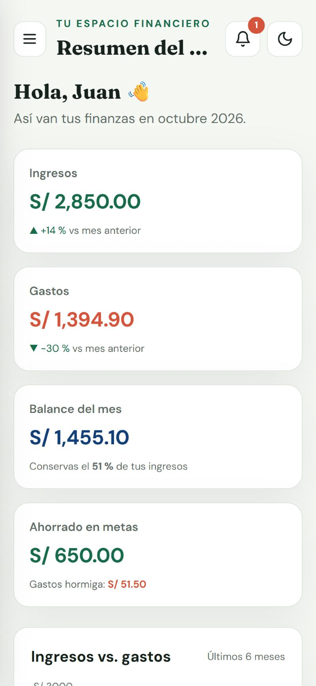
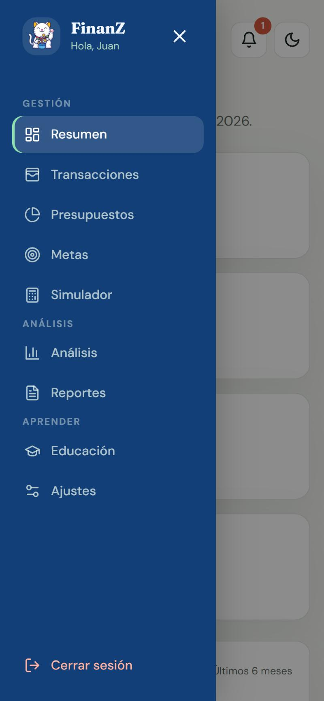
Decisiones técnicas para que el sistema sea rápido, seguro y usable en cualquier dispositivo.
Pool de conexiones HikariCP y servlets sin estado para atender 100–200 usuarios simultáneos.
Secciones cargadas por AJAX, consultas agregadas en SQL e índices: respuestas por debajo de 2 s.
PBKDF2-SHA256 con sal, bloqueo por intentos, CSRF, escape XSS, PreparedStatement y control de propiedad de datos.
Diseño adaptable a celular, tablet y PC, con menú desplegable y modo oscuro.
Aplicación sin estado compartido y pool que se reconecta automáticamente a la base de datos.
GitHub Codespaces levanta el sistema real (Java + MySQL) en la nube, sin instalar nada.
Con tu cuenta de GitHub, haz clic en Probar el sistema.
Se instalan Java 17, Maven y MySQL 8 con los datos de demostración, y se inicia el servidor.
Se abre la pestaña del puerto 8080. Entra con juan@correo.com / Finanz2026.